4.1. パーセプトロンからニューラルネットワークへ¶
4.1.1. 🤔ニューラルネットワークってどういう発想からきてるのさ¶
ニューラルネットワーク（神経網、英: neural network、略称: NN）は、脳機能に見られるいくつかの特性に類似した数理的モデルである。 ニューラルネットワーク - Wikipedia
ｽｳﾘﾃｷﾓﾃﾞﾙと言われましても…というわけで、過去自分が聞いた程度の話でまとめると
動物の脳は多数の神経細胞でできている
神経細胞は シナプス で繋がっている
シナプスには入力と出力がある
と、脳の神経細胞をモデルとしたもので、これがあれば人の脳に近いものができるんじゃね？という発想からきている、らしい。
※ネタバレ: 実際は作るのに膨大なデータと時間が必要なので、ほんの一部のことしかできない
4.1.2. ニューラルネットワークの例¶

左から 入力層, 中間層, 出力層 と呼ばれる
本では順に 第0層, 第1層, 第2層 と呼ぶことにしている
この本では、図のように重みを持つ層が2つあることからを 2層ネットワーク としているが、書籍によってはネットワークを構成する層から 3層ネットワークとする場合もある
4.1.3. パーセプトロンを、ニューラルネットワークの形に変形させてみよう¶
\[\begin{split}y = \begin{cases} 0 \quad (w_1 x_1 + w_2 x_2 \leqq \theta) \\ 1 \quad (w_1 x_1 + w_2 x_2 > \theta) \\ \end{cases}\end{split}\]
そして、\(\theta\)をバイアス(\(- b\))に置き換えて、式変形をするとこうなった:
何が言いたいかというと、バイアス(\(b\))は別の入力の重み、と言い換えられるということである。
隠された関数を定義しなければならないので、数式を変形させよう。
まず注目すべき場所は、条件式の中にある\(b + w_1 x_1 + w_2 x_2\)だ。この結果を条件式で使うなら、変数に入れた方がまとめられそうだ。この結果を\(a\)としよう。
条件式を置き換えてみよう:
おっと、図にすると条件式を書かざるを得ない。見にくいので、この条件式を\(h()\)関数としよう。数式ではこうだ:
2つの入力\(x_1\),\(x_2\)と、それぞれの重み\(w_1\),\(w_2\)の結果\(a\)は:
そして、\(a\)を利用した関数\(h()\)の式は:
関数\(h()\)の結果\(y\)は:
おお、前に「\(x_1\),\(x_2\)と、それぞれの重み\(w_1\),\(w_2\)と、閾値\(\theta\)を比較した条件式の出力\(y\)」とか長ったらしくて一瞬「？」になったものが、わかりやすく説明できるようになった。
4.1.4. 活性化関数¶
関数\(h()\)のように、入力信号の総和を出力信号に変換っする関数は、一般的に 活性化関数 (activation function)と呼ばれる。
また、今まで図で表していた〇を「ノード」または「ニューロン」と呼ぶ。
活性化関数のアルゴリズムは、パーセプトロンのほかにもある。